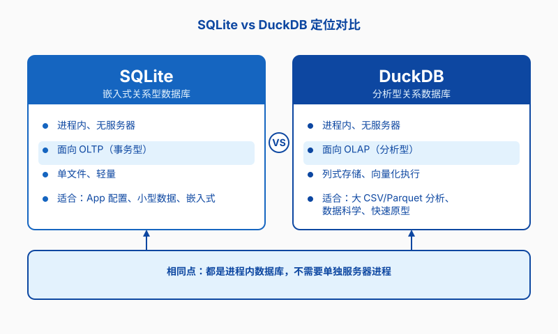

第十一章 DuckDB
上一章我们认识了 SQLite 和 PostgreSQL：一个轻便到只用一个文件，一个稳重到能撑起整个实验室。但在真实的科研现场，你还会遇到另一类场景——仪器吐出来的 CSV 有十几个 G，pandas 读完内存就报警；你想用 SQL 做分析，却不想配置数据库服务器；课题组共享的 Parquet 数据集就躺在文件服务器上，你却不知道从何下手。这一章要聊的 DuckDB，正是为这类“本地、大批量、分析型”任务而生的。
为什么科研需要 DuckDB？
先从一个熟悉的画面开始。
当 pandas 开始喘气
材料实验的测试设备每天都在产生数据。假设你有一台纳米压痕仪，每次测试输出一行结果：载荷、位移、硬度、弹性模量、测试时间。一开始是几千行，用 pandas 读进 DataFrame，画个图、求个平均，毫无压力。几个月后，文件变成了五千万行，CSV 压缩包有 8 GB。你习惯性地写 pd.read_csv("nanoindent_2024.csv")，然后看着电脑的内存占用一路飙红，风扇狂转，最后 Jupyter Kernel 崩溃。
这不是 pandas 的错，也不是你电脑的错，只是数据规模超过了“把整个文件塞进内存再分析”的舒适区。第二章我们学过用命令行处理文件和 CSV，第八章我们已经在 Python 脚本里和外部数据打过交道；但当数据大到内存装不下，你又想保留 SQL 的表达能力时，就需要一个更专门的工具。
不想装服务器的日子
第十章我们学过 PostgreSQL，它确实能处理大量数据，也能让实验室多人共享。但代价是你要安装服务、建用户、配权限、调监听地址，还要确保服务一直跑着。如果你只是想在个人电脑上快速探索一份数据，或者临时分析一个从同事那里拷贝来的 Parquet 文件，这些步骤就显得太重了。
SQLite 倒是零配置，一个文件就能工作。可它天生为事务型应用设计：插入一条记录、更新一个状态、查询某一行。让它对五千万行做分组聚合，它也能跑，但速度会让你失去耐心。
在 SQLite 和 PostgreSQL 之间
DuckDB 想站的位置，就是 SQLite 和 PostgreSQL 之间的那片空地：像 SQLite 一样嵌入在进程里，不需要服务器；又像 PostgreSQL 一样拥有强大的分析查询能力。它用 SQL，所以第十章学过的 SELECT、JOIN、GROUP BY 都能直接搬过来。它还能直接读取 CSV 和 Parquet，不用先把数据导入数据库。
对科研工作者来说，这意味着你可以把 DuckDB 当作“会 SQL 的超级 pandas”：本地文件、即开即用，内存不够也能跑。
DuckDB 是什么：SQLite 的分析表亲
DuckDB 诞生于荷兰的 Centrum Wiskunde & Informatica（CWI），和 SQLite 类似，它也是一个嵌入式数据库。但两者的设计目标截然不同。

一个文件也是一个库
和 SQLite 一样，DuckDB 可以把整个数据库存成一个 .duckdb 文件。你不需要启动守护进程，不需要配置监听端口，打开 Python 或者命令行就能用。这让它非常适合个人分析、可重复研究脚本、Jupyter Notebook 实验。
为分析查询而生
DuckDB 内部采用列式存储和向量化执行。通俗地说，它把同一列的数据放在一起处理，而不是一行一行地读。这对“计算某列平均值”“按某列分组统计”这类分析操作特别友好。再加上它针对现代 CPU 做了并行优化，跑聚合查询的速度往往比 SQLite 快上几个数量级。
SQLite 擅长的是“查一行、改一行”的事务操作——比如手机 App 里记录你的学习进度。DuckDB 擅长的是“扫描整张表、做统计、出报表”的分析操作——比如从五千万行压痕数据里找出硬度分布规律。
不是 SQLite 的替代品
很多人会问：有了 DuckDB，还要 SQLite 吗？答案是两者各司其职。SQLite 是“世界上最广泛部署的数据库”，嵌入在手机、浏览器、汽车里，处理的是事务和配置。DuckDB 是数据分析工具箱里的新成员，处理的是批量分析。
你也可以把它们组合起来：用 SQLite 收集实验现场的零散数据，定期把汇总后的结果导入 DuckDB 做深度分析。第十章里我们强调过，选型要看场景，DuckDB 也不例外。
安装与第一个查询
DuckDB 的安装方式很友好，既可以通过 pip 作为 Python 库使用，也有独立的命令行客户端。
用 pip 安装 Python 库
如果你主要在 Jupyter Notebook 或 Python 脚本里分析数据，装 Python 包就够了：
student@workstation:~$ pip install duckdb
装好后在 Python 里导入就能用：
student@workstation:~$ python3 -c "import duckdb; print(duckdb.__version__)"
1.0.0
截至本文写作时，终端会输出类似 1.0.0 的版本号。
命令行客户端
有时候你只想在终端里快速跑一条 SQL，或者处理一个太大的 CSV，不想写 Python 脚本。DuckDB 提供了独立的 CLI。
下载预编译二进制
DuckDB 官方提供预编译的 Linux 二进制，下载后可以直接运行，不依赖发行版仓库：
student@workstation:~$ mkdir -p ~/.local/bin
student@workstation:~$ wget https://github.com/duckdb/duckdb/releases/latest/download/duckdb_cli-linux-amd64.zip
student@workstation:~$ unzip duckdb_cli-linux-amd64.zip
student@workstation:~$ chmod +x duckdb
student@workstation:~$ mv duckdb ~/.local/bin/
如果你已经把 ~/.local/bin 加入 PATH（第二章介绍过），现在就可以在任意位置运行 duckdb。如果发行版仓库里恰好有 DuckDB 包，也可以 sudo apt install duckdb，但建议先确认仓库版本是否较新。
运行第一条 SQL
安装完成后，输入 duckdb 就能进入交互式命令行。如果不带文件名，它会在内存里创建一个临时数据库；带文件名则会把数据持久化到磁盘：
student@workstation:~$ duckdb lab_analysis.duckdb
v1.0.0 0f2a6...
Enter ".help" for usage hints.
D CREATE TABLE samples (sample_id INTEGER, name VARCHAR, hardness DOUBLE);
D INSERT INTO samples VALUES (1, 'S001', 285.5), (2, 'S002', 310.2), (3, 'S003', 298.0);
D SELECT * FROM samples WHERE hardness > 290;
sample_id name hardness
2 S002 310.2
3 S003 298.0
截至本文写作时，启动画面会显示类似 v1.0.0 ... 的版本号。
DuckDB 的默认提示符是 D，SQL 语法和 SQLite、PostgreSQL 高度一致。第十章里练过的查询语句，大部分都能直接复用。
直接查询 CSV 和 Parquet
DuckDB 最吸引人的地方，可能是它能直接对文件运行 SQL，而不需要先把数据“导入”数据库。
把 CSV 当成表来查
假设你的压痕仪导出了一个 CSV 文件 nanoindent_2024.csv，里面有 sample_id、load_mN、displacement_nm、hardness_GPa、test_date 等列。你只需要写：
D SELECT sample_id, AVG(hardness_GPa) FROM 'nanoindent_2024.csv' GROUP BY sample_id;
DuckDB 会自动识别 CSV 的表头、分隔符和类型。你也可以显式指定格式，避免它猜错：
D SELECT * FROM read_csv_auto('nanoindent_2024.csv', header=true, delimiter=',');
这意味着你不再需要先把 CSV 读进内存，也不需要写循环逐块处理。SQL 查询引擎直接在磁盘上扫描文件，只把需要的结果返回给你。
读取 Parquet 格式
Parquet 是一种列式存储格式，在数据工程和机器学习领域很流行。它把同一列的数据压缩存放，读取分析时比 CSV 快得多，也更省空间。很多公开数据集、Hugging Face 上的表格数据、实验室归档的大数据，都会提供 Parquet 格式。
DuckDB 对 Parquet 的支持非常好，查询方式和 CSV 几乎一样：
D SELECT * FROM 'materials_dataset.parquet' LIMIT 10;
你甚至可以一次性查询多个 Parquet 文件。假设数据集按月份拆分成了很多文件：
D SELECT test_month, COUNT(*) FROM 'nanoindent_*.parquet' GROUP BY test_month;
这条语句会把所有匹配的文件当作一张虚拟表来查，非常适合处理仪器按时间分片输出的数据。
创建表并导入
如果你发现某个查询要反复跑，可以把文件数据导入 DuckDB 的持久化表中，后续查询会更快：
D CREATE TABLE nanoindent AS SELECT * FROM 'nanoindent_2024.csv';
或者用 COPY 命令：
D CREATE TABLE nanoindent (sample_id INTEGER, load_mN DOUBLE, displacement_nm DOUBLE, hardness_GPa DOUBLE, test_date DATE);
D COPY nanoindent FROM 'nanoindent_2024.csv' (FORMAT CSV, HEADER true, DELIMITER ',');
导入之后，你就可以像操作普通数据库表一样做索引、聚合、JOIN。
与 Python 集成
DuckDB 和 Python 的结合非常自然，几乎可以无缝替换掉“pandas 读大 CSV”的工作流。
从 pandas 到 DuckDB
在 Python 里，DuckDB 的默认连接是内存中的。你可以直接执行 SQL，查询本地的 DataFrame 或者文件：
import duckdb
# 查询一个 CSV 文件
result = duckdb.sql("SELECT sample_id, AVG(hardness_GPa) FROM 'nanoindent_2024.csv' GROUP BY sample_id")
print(result)
注意这里不需要先建数据库、再建表、再导入。DuckDB 把文件路径当作表名，一行 SQL 就能出结果。
查询结果直接变 DataFrame
如果你已经习惯用 pandas 做后续分析，DuckDB 可以把查询结果直接转成 DataFrame：
import duckdb
con = duckdb.connect()
df = con.execute(
"SELECT sample_id, AVG(hardness_GPa) AS avg_hardness "
"FROM 'nanoindent_2024.csv' GROUP BY sample_id"
).fetchdf()
print(df.head())
这样你可以让 DuckDB 承担“筛选、聚合、JOIN”等重活，只把需要的小结果集交给 pandas 画图或做统计检验。
处理比内存大的数据
当 CSV 真的比内存大时，DuckDB 可以边读边算，把中间结果写到临时文件。你不需要手动分块，也不需要学习 MapReduce。比如要计算所有测试的硬度直方图：
import duckdb
con = duckdb.connect()
con.execute("""
CREATE TEMPORARY TABLE hardness_bins AS
SELECT FLOOR(hardness_GPa / 5) * 5 AS bin_start, COUNT(*) AS cnt
FROM 'nanoindent_2024.csv'
GROUP BY FLOOR(hardness_GPa / 5) * 5
ORDER BY bin_start
""")
df = con.execute("SELECT * FROM hardness_bins").fetchdf()
print(df)
DuckDB 会在背后管理内存和临时文件，你只需要关心 SQL 怎么写。这种“内存不够也能跑”的能力，是 pandas 直接读取难以做到的。
什么时候用 DuckDB，什么时候不用
没有任何一个工具适合所有场景。DuckDB 很强，但它有自己的舒适区。
适合 DuckDB 的场景
- 你需要在本地分析 GB 甚至 TB 级别的 CSV/Parquet，不想装数据库服务器。
- 你已经会用 SQL，希望用 SQL 直接查询文件，而不是写 Python 循环。
- 你的数据主要来自文件、对象存储或本地磁盘，而不是需要多人实时写入的系统。
- 你想在 Jupyter Notebook 里快速探索数据，同时保留把分析脚本化的能力。
不适合 DuckDB 的场景
- 你的应用需要很多用户同时写入同一张表，比如实验室签到系统或在线订单系统。这种场景更适合 SQLite（轻量单机）或 PostgreSQL（多用户共享）。
- 你需要严格的事务隔离、行级锁、复杂权限管理。DuckDB 主要面向分析，事务能力不如传统 OLTP 数据库。
- 你的数据分布在多台机器上，需要分布式计算。DuckDB 是单节点引擎，这种场景要考虑 Spark、Dask 或云数据仓库。
- 你只是临时查一个几百行的表格。杀鸡不用牛刀，pandas 或 SQLite 可能更轻快。
科研数据处理的工具箱里，DuckDB 是一把新锤子。它不能取代 SQLite 的事务便利，也取代不了 PostgreSQL 的多用户共享，但它在“本地、大批量、分析型”任务上，确实能让你的工作轻松不少。下一章我们会回到更宏观的视角，对全书做一次收束。